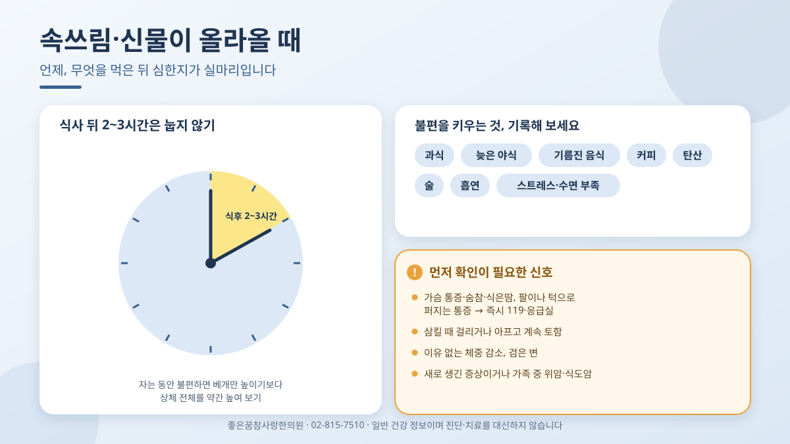
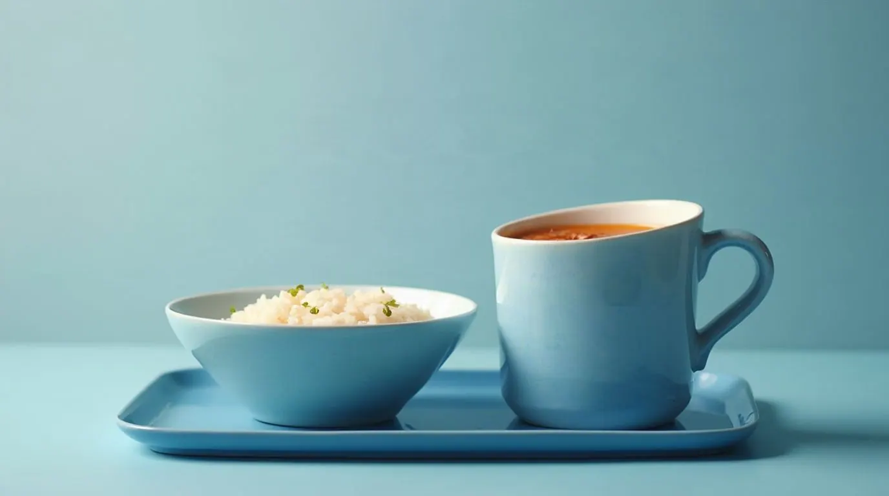

속쓰림과 신물이 2주 이상 반복되면 식사 시간과 야식, 누운 자세, 음주·흡연 같은 생활을 함께 살피고, 가슴 통증이 있거나 검은 변·토혈·삼킴 곤란·체중 감소가 있으면 바로 내과 등 병원 확인을 먼저 권합니다.
여쭙는 것
- 하루에 언제 가장 심한가요? 식후, 누웠을 때, 공복, 새벽 중 어느 때인가요?
- 어떤 음식이나 상황에서 심해지나요? 기름진 음식, 커피, 술, 야식, 과식, 스트레…
- 식사 뒤 얼마 만에 눕나요?
생활에서 해 볼 것
- 식사 뒤 2~3시간은 눕지 않기
- 과식과 늦은 야식 줄이기
- 기름진 음식, 커피, 탄산, 술을 줄이고 불편했던 음식을 기록해 보기
한의원에서 함께 살필 것
- 식후 더부룩함과 트림이 반복되는 경우 식사 속도와 소화 기능의 긴장을 함께 살핍니다.
- 식후에 속쓰림이나 신물이 올라오는 경우 식사 시간과 자세, 스트레스와의 관계를 함께…
- 배에 가스가 차고 변의 리듬이 흔들리는 경우 식사 습관과 장의 움직임을 함께 살핍니다.
먼저 확인이 필요한 신호
- 가슴 통증, 숨 참, 식은땀, 왼쪽 팔이나 턱으로 퍼지는 통증: 심장 문제일 수 있…
- 음식을 삼킬 때 걸리거나 아프고, 계속 구토를 하는 경우
- 피를 토하거나 커피 찌꺼기 같은 것을 토하는 경우: 바로 내과나 응급실에서 확인하세요.

식사 뒤 명치가 타는 듯하고 신물이 목까지 올라오는 증상이 2주 넘게 반복된다면, 먼저 경고 증상이 없는지 확인한 뒤 식사 시간과 자세 같은 생활을 함께 살펴보는 것이 순서입니다. 위산이 식도 쪽으로 올라오는 것과 관련된 경우가 많지만, 비슷한 증상 뒤에 다른 원인이 있을 수 있기 때문입니다. 검은 변, 피를 토함(토혈), 음식이 잘 넘어가지 않는 삼킴 곤란, 이유 없는 체중 감소가 하나라도 있다면 한의원보다 내과 확인이 먼저입니다.
왜 이런 불편이 생길 수 있나요
- 위와 식도 사이를 조여 주는 부분이 느슨해지면 위 안의 내용물이 식도 쪽으로 올라오기 쉬워질 수 있습니다.
- 배부르게 먹고 바로 눕거나 늦은 야식 뒤 잠들면 위산이 거슬러 올라오기 쉬운 자세가 됩니다.
- 기름진 음식, 커피, 술, 흡연, 복부 비만은 이런 불편을 키우는 요인으로 알려져 있습니다.
- 스트레스와 수면 부족이 겹치는 시기에 증상을 더 예민하게 느끼는 분도 많습니다.

자주 하는 오해
- 속쓰림은 위산이 많아서라고만 여기기 쉽지만, 식사 시간과 자세, 과식, 긴장처럼 여러 요인이 겹쳐 생기는 경우가 많습니다.
- 우유를 마시면 속이 편해진다고 생각하기 쉽지만, 잠깐 가라앉은 듯해도 시간이 지나 다시 불편해지는 분이 있어 우유에만 기대지 않는 편이 좋습니다.
- 약을 먹으면 가라앉으니 괜찮다고 여기기 쉽지만, 약을 먹어도 자꾸 반복되거나 점점 잦아진다면 원인을 확인할 때입니다.
- 가슴이 타는 느낌은 모두 위 때문이라고 생각하기 쉽지만, 숨참과 식은땀이 함께 있다면 심장 문제일 수 있어 바로 응급 진료가 필요합니다.
예를 들면 이런 경우입니다
- 예를 들어 회식이 잦고 늦게 귀가해 바로 잠드는 직장인이라면, 저녁 식사와 잠드는 시각 사이의 간격부터 기록해 보며 살핍니다.
- 예를 들어 밤늦게 공부하며 야식과 커피를 자주 찾는 수험생이라면, 새벽에 신물이 올라오는 날과 야식을 먹은 날이 겹치는지 함께 봅니다.
- 예를 들어 진통소염제를 자주 드시는 어르신이라면, 속쓰림이 약을 먹은 뒤와 관련 있는지 확인하고 처방한 의사와 상의하도록 안내합니다.

먼저 이렇게 여쭙니다
- 하루에 언제 가장 심한가요? 식후, 누웠을 때, 공복, 새벽 중 어느 때인가요?
- 어떤 음식이나 상황에서 심해지나요? 기름진 음식, 커피, 술, 야식, 과식, 스트레스를 떠올려 보세요.
- 식사 뒤 얼마 만에 눕나요?
- 목에 뭔가 걸린 느낌, 헛기침, 쉰 목소리가 함께 있나요?
- 몇 주 전부터 이어졌고, 점점 심해지고 있나요?
몸따삶잘의 눈으로 소화를 몸의 온기, 잠, 대소변, 평소 생활과 함께 봅니다.
일상에서 먼저 해 볼 수 있는 것
- 식사 뒤 2~3시간은 눕지 않기
- 과식과 늦은 야식 줄이기
- 기름진 음식, 커피, 탄산, 술을 줄이고 불편했던 음식을 기록해 보기
- 흡연을 줄이거나 끊기
- 자는 동안 불편하다면 베개만 높이기보다 상체 전체를 약간 높여 보기
- 허리를 조이는 벨트나 옷은 식후에 조금 느슨하게 하기
- 식사는 천천히, 저녁은 잠들기 3시간 전까지 마치기
스스로 점검해 보세요
- 속쓰림이나 신물이 일주일에 두 번 이상 올라온다
- 누웠을 때나 허리를 숙일 때 더 심해진다
- 야식이나 술을 먹은 다음 날 아침 목이 칼칼하거나 쉰 소리가 난다
- 식사 뒤 2시간 안에 눕는 날이 많다
- 커피를 빈속에 마신다
- 진통소염제나 아스피린을 자주 먹는다
- 스트레스가 많거나 잠이 짧은 주에 더 심해진다
여러 항목에 해당한다면 진료 때 그대로 말씀해 주세요. 다만 검은 변, 토혈, 삼킴 곤란, 체중 감소가 있다면 이 목록보다 내과 확인이 먼저입니다.
얼마나 지켜보고, 언제 검사받으면 좋을까요
- 과식이나 술 뒤 하루 이틀 쓰린 정도라면 식사 시간과 자세를 바꾸며 1~2주 지켜볼 수 있습니다.
- 생활을 바꿔도 2주 넘게 반복되거나 점점 잦아진다면 내과 진료로 원인을 확인하시길 권합니다.
- 검은 변, 피를 토함, 삼킴 곤란, 이유 없는 체중 감소가 있다면 기다리지 말고 바로 내과에서 확인하세요.

한의원에서 함께 살필 수 있는 경우
- 식후 더부룩함과 트림이 반복되는 경우 식사 속도와 소화 기능의 긴장을 함께 살핍니다.
- 식후에 속쓰림이나 신물이 올라오는 경우 식사 시간과 자세, 스트레스와의 관계를 함께 살핍니다.
- 배에 가스가 차고 변의 리듬이 흔들리는 경우 식사 습관과 장의 움직임을 함께 살핍니다.
좋은꿈참사랑한의원에서는 먼저 증상이 심해지는 시간과 상황을 충분히 듣고, 경고 증상이 없는지 확인합니다. 진맥을 기본으로 하고 필요하다고 판단될 때 설진·복진을 더해 살핀 뒤 상태에 맞춰 침이나 한약 상담 등을 정하고, 식사와 자세에서 바꿔 볼 것도 함께 정합니다. 귀가 전에는 집에서 지켜볼 점을 알려 드립니다.
첫 방문에는 먼저 증상이 언제, 어떤 음식과 자세에서 심해지는지 듣고 경고 증상이 없는지 확인합니다. 이어서 진맥을 짚고 혀와 배를 살펴 소화 상태와 긴장을 봅니다. 필요하다고 판단되면 원내 장비로 몸 상태를 함께 확인하고, 가져오신 식사·수면 기록과 내시경 결과를 같이 봅니다. 그런 다음 지금 불편이 식사 시간인지, 자세인지, 긴장과 잠인지 설명드리고 치료 방향과 집에서 바꿔 볼 한 가지를 함께 정합니다. 다시 오시면 지난번과 비교해 어떤 날 불편했는지부터 이어서 여쭙습니다.
이렇게 기록해 오시면 상담이 쉬워집니다
- 증상이 심했던 날짜와 시간, 그 전에 먹은 음식
- 식사 뒤 눕기까지 걸린 시간과 잠든 시각
- 복용 중인 위산억제제·진통소염제·아스피린
- 최근 내시경 결과(있다면)

이런 증상은 먼저 확인이 필요합니다
다음이 있으면 한의원 진료에 앞서 내과 등에서 검사를 받으시기를 권합니다.
- 가슴 통증, 숨 참, 식은땀, 왼쪽 팔이나 턱으로 퍼지는 통증: 심장 문제일 수 있어 즉시 119나 응급실을 이용하세요.
- 음식을 삼킬 때 걸리거나 아프고, 계속 구토를 하는 경우
- 피를 토하거나 커피 찌꺼기 같은 것을 토하는 경우: 바로 내과나 응급실에서 확인하세요.
- 이유 없이 체중이 줄어드는 경우
- 검은 변이나 피가 섞인 변이 나오는 경우
- 빈혈이 있다는 말을 들은 경우
- 나이가 들어 새로 생긴 증상이거나 가족 중에 위암·식도암이 있는 경우
복용 중인 약은 처방한 의사와 상의 없이 줄이거나 끊지 않습니다.
함께 읽으면 좋은 글
- 식사 뒤에 커피를 마시면 속이 쓰리거나 불편할 때는 어떻게 하나요?
- 식사 뒤에 속이 더부룩한 것은 무엇 때문이고, 속쓰림과는 어떻게 다른가요?
- 위내시경에서 ‘위염 소견’이라고 들었을 때 일상에서는 무엇을 돌아보나요?
한눈에 보는 표
| 구분 | 핵심 |
|---|---|
| 여쭙는 것 | 하루에 언제 가장 심한가요? 식후, 누웠을 때, 공복, 새벽 중 어느 때인가요? 어떤 음식이나 상황에서 심해지나요? 기름진 음식, 커피, 술, 야식, 과식, 스트레스를 떠올려 보세요. |
| 생활에서 해 볼 것 | 식사 뒤 2~3시간은 눕지 않기 과식과 늦은 야식 줄이기 |
| 한의원에서 함께 살필 것 | 식후 더부룩함과 트림이 반복되는 경우 식사 속도와 소화 기능의 긴장을 함께 살핍니다. 식후에 속쓰림이나 신물이 올라오는 경우 식사 시간과 자세, 스트레스와의 관계를 함께 살핍니다. |
| 먼저 확인이 필요한 신호 | 가슴 통증, 숨 참, 식은땀, 왼쪽 팔이나 턱으로 퍼지는 통증: 심장 문제일 수 있어 즉시 119나 응급실을 이용하세요. 음식을 삼킬 때 걸리거나 아프고, 계속 구토를 하는 경우 |
자주 묻는 질문
속쓰림과 신물은 한의원에서 어떻게 살피나요?
심한 시간과 상황, 식사 습관, 누운 자세, 대변과 잠을 먼저 묻고 몸의 온기와 평소 생활까지 함께 살핍니다.
언제 병원 검사를 받아야 하나요?
검은 변, 피를 토함, 삼킴 곤란, 체중 감소가 있으면 바로 내과에서 확인하세요. 혈변, 지속적인 구토, 빈혈이 있거나 2주 이상 반복되며 점점 심해질 때도 먼저 병원 검사를 권합니다.
가슴이 타는 듯한 통증이 심장 문제일 수도 있나요?
가슴 통증과 함께 숨이 차고 식은땀이 나거나 왼쪽 팔·턱으로 통증이 퍼지면 즉시 응급 진료를 받아야 합니다.
위산억제제를 먹고 있는데 진료받을 수 있나요?
네, 복용 중인 약을 모두 알려 주세요. 약은 임의로 끊거나 줄이지 마시고 처방한 의사와 상의해야 합니다.
이 글은 일반적인 건강 정보이며 개인의 진단이나 치료를 대신하지 않습니다. 증상이 있거나 복용 중인 약이 있다면 진료를 통해 확인하세요. 치료 효과는 개인마다 다를 수 있습니다.
작성 기준: 일반적으로 알려져 있는 건강 정보를 참고해 정리했습니다(대표원장 감수). 증상 기록은 1~2주 동안 하루 1회, 비슷한 시간에 적어 오시면 지난 상태와 비교하기 쉽습니다.
좋은꿈참사랑한의원은 재진 때 지난번 이야기부터 이어서 여쭙니다. 진료시간과 예약은 오시는 길에서 확인하세요.